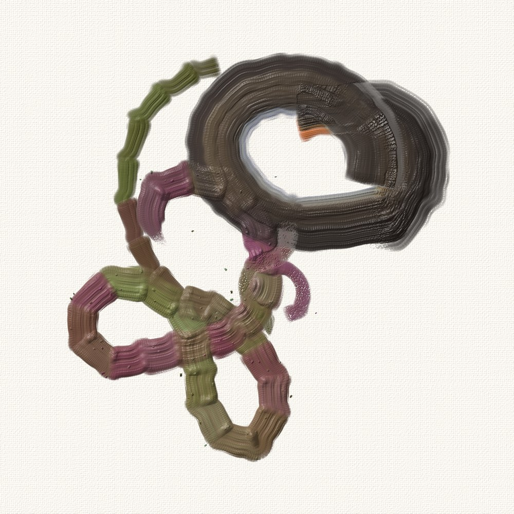

Painting the sound · a test
Paint on the graphics card
Crossed hands, painted in physical paint in the Cycles composition, replayed live: the brushwork the study already computes, laid down, mixed, dried and lit in WebGL 2 fragment shaders, in step with the sound. The question is only whether it can run live. The readout shows the frame time on this machine; 16.7 ms holds 60 frames a second.

What runs where
On the graphics card, per pixel, every frame: each brush step of the frame stamped into the paint (its bristle groups, their loads, the feathered lift, dry brush catching on the weave), wet paint smudged along the stroke, a stroke over dry paint covering it, wetness by thickness, then the paint mixed by Kubelka-Munk over seven pigments, its height over the canvas weave lit by a raking light, and the wet gloss. The paint state is two float textures (seven pigment amounts and each pixel's last wet time), ping-ponged. On the CPU, in the page: only reading which steps fall in the frame and uploading them, a few kilobytes. The brushwork itself - where each brush is, how wide, how hard, what it holds - is precomputed from the sound (tools/export_gpu.py) into strokes.bin.
Cut from the CPU version: the brush picking paint up and carrying it on (it needs the canvas under the brush read back every step; here wet paint is smudged along the stroke instead), the paint pushed into ridges at a stroke's flanks, and the per-brush test that keeps a brush from dragging its own fresh paint (here paint younger than 0.15 s is left alone, whichever brush laid it). The brush's mixture is one per step rather than one per bristle group.